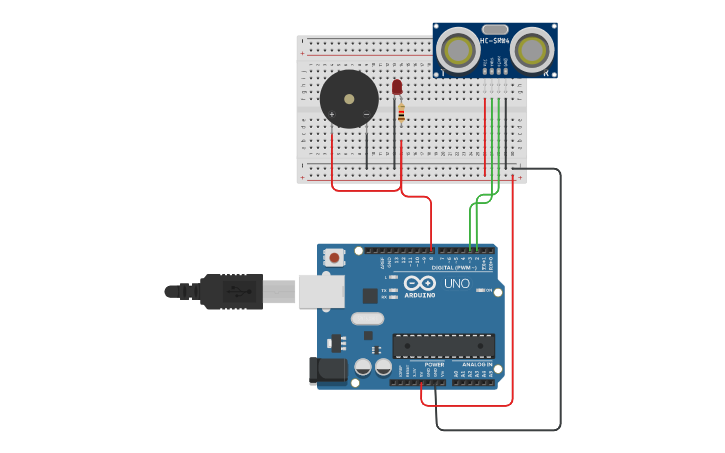

PROJECT 11: OBSTACLE DETECTOR
Ultrasonic Distance Sensing
Mission Brief
Bats and dolphins navigate using sound waves. In this project, you will give your Arduino the same ability using an HC-SR04 Ultrasonic Sensor. It will measure distance and trigger an alarm if an object gets too close.
Key Components
- Arduino Uno R3
- HC-SR04 Ultrasonic Sensor
- Piezo Buzzer
- Red LED
- Resistors
- Jumper Wires
Circuit Diagram

Pin Connections
| Component Pin | Arduino Connection |
|---|---|
| Sensor VCC | 5V |
| Sensor GND | GND |
| Sensor Trig | Pin 3 |
| Sensor Echo | Pin 2 |
| Buzzer (+) | Pin 4 |
| LED Anode (+) | Pin 5 |
Step-by-Step Instructions
- Insert the HC-SR04 sensor into the breadboard.
- Connect Sensor VCC to 5V and GND to GND.
- Connect Sensor Trig to Pin 3 and Echo to Pin 2.
- Place the Buzzer and LED on the breadboard.
- Connect the Buzzer Positive leg to Pin 4.
- Connect the LED Anode (Long leg) to Pin 5 via a resistor.
- Connect the negative legs of both the Buzzer and LED to GND.
- Upload the code below.
Arduino Code
/* Project 11 - Obstacle Detector
* Uses HC-SR04 to measure distance.
* Triggers alarm (Pin 4) and LED (Pin 5) if object is closer than 15cm.
*/
const int trigPin = 3;
const int echoPin = 2;
const int buzzer = 4;
const int led = 5;
long duration;
int distance;
void setup() {
pinMode(trigPin, OUTPUT); // Sends the sound wave
pinMode(echoPin, INPUT); // Receives the echo
pinMode(buzzer, OUTPUT);
pinMode(led, OUTPUT);
Serial.begin(9600);
}
void loop() {
// 1. Clear the Trig Pin
digitalWrite(trigPin, LOW);
delayMicroseconds(2);
// 2. Send a 10 microsecond pulse (The "Ping")
digitalWrite(trigPin, HIGH);
delayMicroseconds(10);
digitalWrite(trigPin, LOW);
// 3. Read the Echo Pin (Time in microseconds)
duration = pulseIn(echoPin, HIGH);
// 4. Calculate Distance (Speed of sound = 0.034 cm/us)
distance = duration * 0.034 / 2;
Serial.print("Distance: ");
Serial.print(distance);
Serial.println(" cm");
// 5. Alarm Logic
if (distance < 15) {
digitalWrite(led, HIGH);
tone(buzzer, 1000); // Alert!
} else {
digitalWrite(led, LOW);
noTone(buzzer); // Safe
}
delay(100);
}
How It Works
- The Physics (Sonar):
-
Send & Receive:
The sensor sends out a high-frequency sound burst (40kHz). This sound hits an object and bounces back (Echo). -
The Calculation:
Distance = (Time × Speed of Sound) / 2.
We divide by 2 because the sound traveled to the object and back. - Code Logic:
-
pulseIn():
This specific Arduino function waits and measures exactly how long (in microseconds) the Echo pin stays HIGH. -
Trigger Pulse:
We manually turn the Trig pin HIGH for 10 microseconds to tell the sensor "Fire now!".
Expected Output
Open the Serial Monitor. You will see distance measurements in centimeters. Place your hand in front of the sensor. As you move closer than 15cm, the LED will light up and the buzzer will sound.
What You Learned
- How Ultrasonic Sensors work (Physics of Sound).
- Using
pulseIn()to measure precise timing. - Mathematical calculations inside code (Distance Formula).
Next Steps / Extension Ideas
Build a "Reverse Parking Sensor" where the buzzer beeps faster as you get closer to the object (like in a car). Hint: Use the `distance` variable to control the `delay()`.